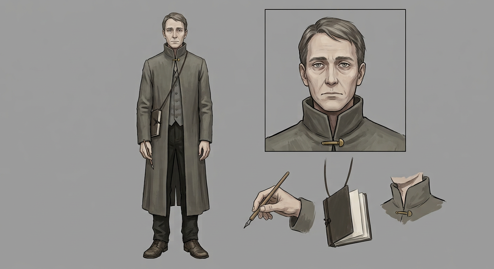

GREY CLERK — model sheet
Chapter 009 · first appearance. The drawing reference for every page this character is on — the eight required panels — front · side · back · face · detail · hands · kit · action, in the house panel order, per the character art spec.

🔍 click to zoom
1front2side3back4face5hands (the dip-pen grip)6detail (the knot-marked record book on its neck-cord)7kit (dip-pen, ink pot, blotting cloth)8action (the counter threshold, stripped of office)
Drawing brief
- Build: spare, ordinary, slightly stooped from years over a desk. A body shaped by sitting — the opposite of Bhan's width and the Inspector's comfort.
- Face: plain, forgettable, easy to lose in a crowd of two — that is the design brief. A middle-aged human man, thinning greying flat hair combed without conviction; pale, indoor skin; eyes that read everything and settle on nothing. No beard, no ornament. His face must never carry an expression strong enough to quote.
- Hands: ink-stained on the right index and middle finger; the dip-pen grip is his resting state — the ref sheet's hands panel. In Ch. 013 Page 008 he presses his bare thumb into wax beside the keeper's knot: the one gesture in the series where his hands do something his office never taught.
- Costume (in office): long office-grey coat with a high plain collar, no tie, no hat, no crest — the machine's grey, nothing else. The record book hangs on a cord at his neck (detail panel): knot-marked, fat, the Office's working memory.
- Costume (stripped — Ch. 013 Pages 008–010): plain undyed wool coat, bare head, and the cord at his collar an empty loop — no seal, no book. The absence is the costume. Any panel of him off-duty must read as "the same man with everything that spoke for him removed."
- Kit: dip-pen, ink pot, blotting cloth, the record book on its cord, and — from Ch. 013 — one kept object that never appears in the Office inventory: the register's terms, fair copy, carried inside his coat.
- Silhouette test: a grey question mark over a desk. Stripped: a plain man in a plain coat, and somehow still identifiable — the empty cord-loop does it.
Full written sheet, canon rules and card-game line: Grey Clerk